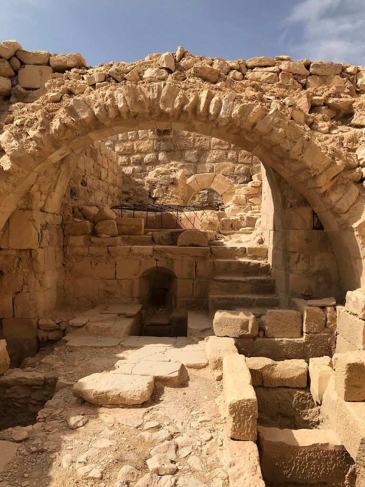
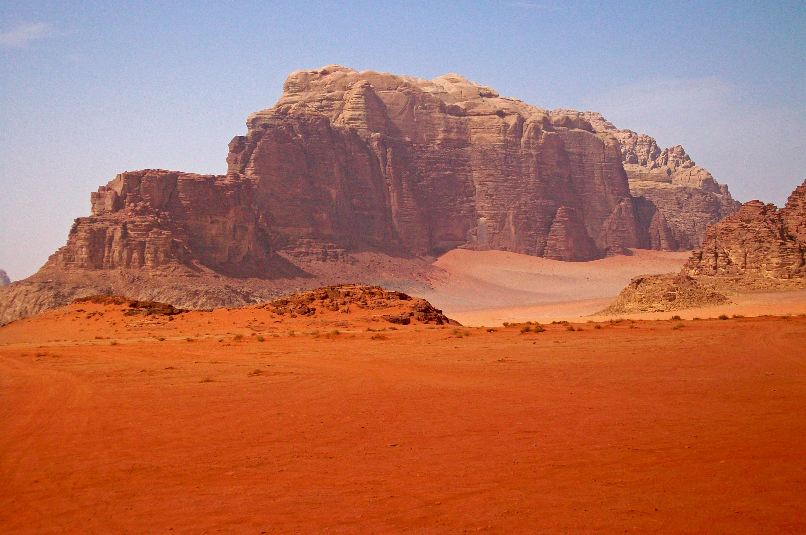
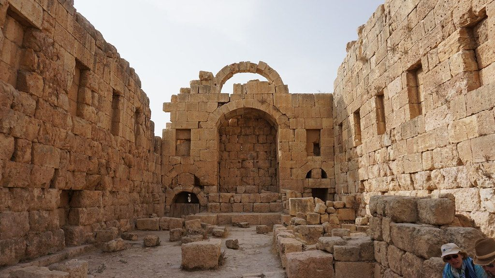
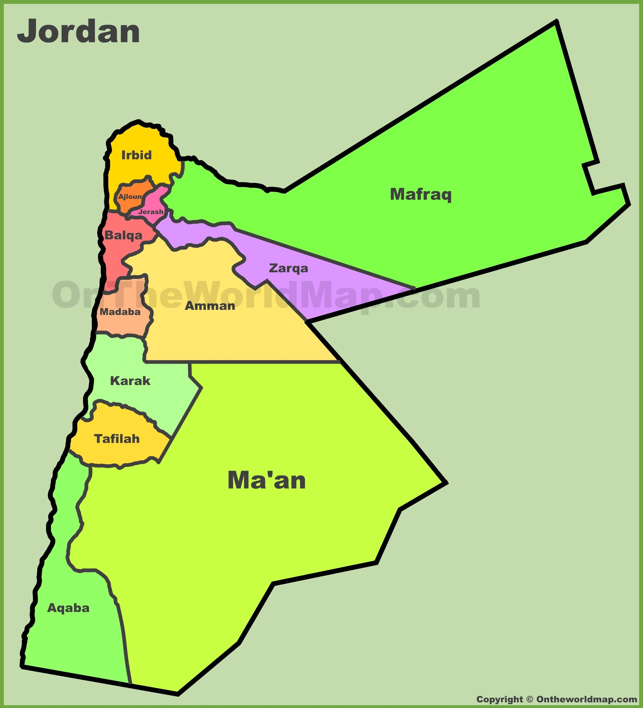

History
Jordan, officially the Hashemite Kingdom of Jordan, three kingdoms emerged there as the Bronze Age ended. They were called Ammon, Moab, and Edom. The later rulers of the area included the Nabataean Kingdom, the Roman Empire, and the Ottoman Empire. During World War 1, the Great Arab Revolt against the Ottomans occurred in 1916. In 1921, the entire area became a British protecote. In 1946, Jordan became an independant state officially called Hashemite Kingdom of Transjordan.
In 1949, it was renamed the Hashemite Kingdom of Jordan after it captured the West Bank during the Arab-Isreli War. It owned this land until 1967 when it was taken by Israel. In 1988, Jordan renounced its claim to the land and became one of the two Arab states to sign a peace treaty with Israel.

|
 |
|  |  |
Geography
Jordan is an Arab country in Western Asia. Jordan is bordered by Saudi Arabia to the south and the east, Iraq to the north-east, Syria to the north and Israel and Palestine (West Bank) to the west.
It is located on the east bank of the Jordan River. The Dead Sea is located along its western borders and the country has a short 26-kilometer (16 mi) coastline on the Red Sea in its extreme south-west. It is at the crossroads of Asia, Africa, and Europe.
Cities
- Amman
- Zarqa
- Irbid
- Russeifa
- Al-Quwaysimah